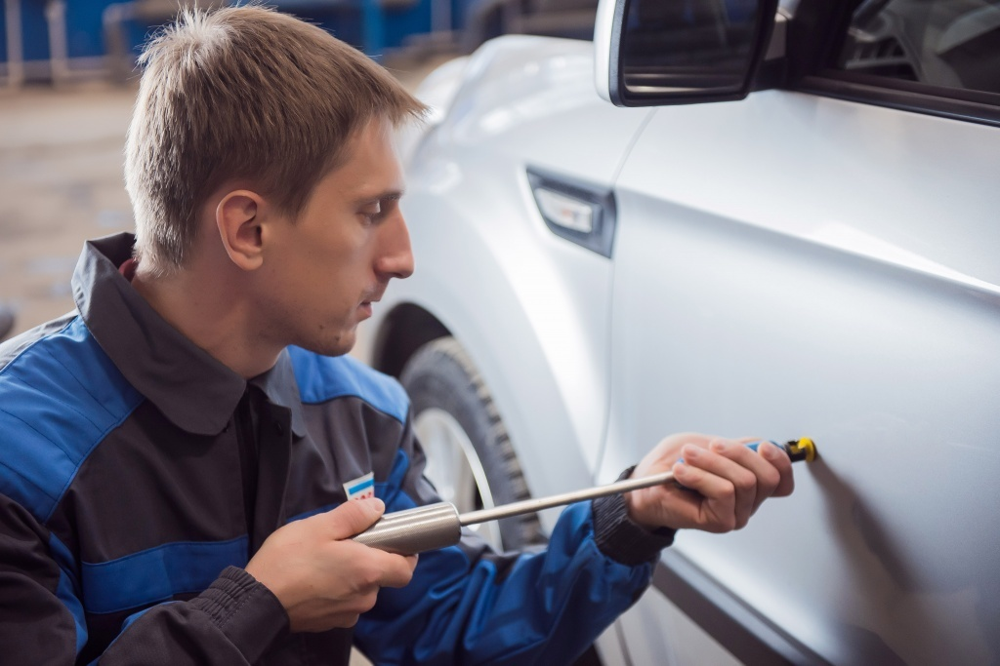
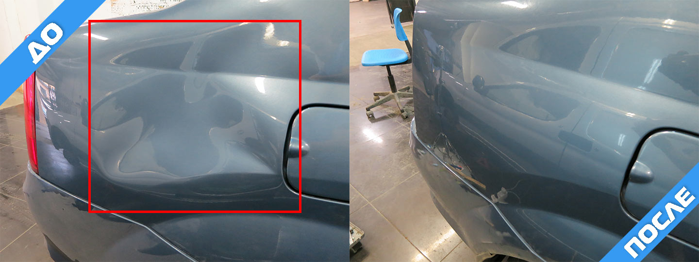
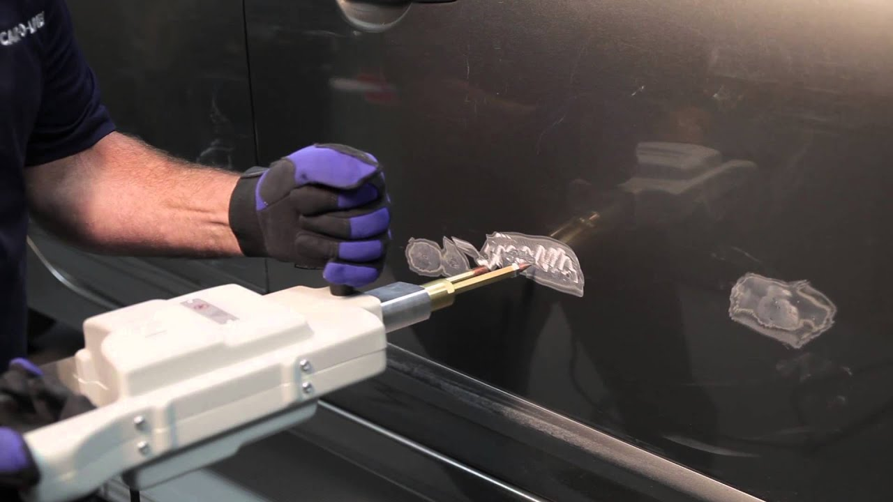
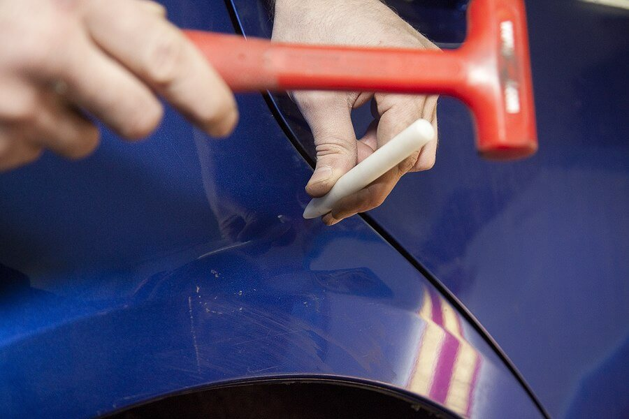

АВТО АПТЕКА
Кузовные работы
+7 (995) 110 32 12
avtoapteka02@mail.ru
avtoapteka02@mail.ru
9:00 - 18:00
Понедельник - Пятница
Понедельник - Пятница
Компания Авто Аптека делает рихтовку кузова авто в Краснодаре. Цена от 500 рублей! Устранение простых вмятин вакуумным методом без покраски автомобиля. Гарантия на все виды работ.

Рихтовочные работы — это один из базовых этапов работ по восстановлению кузова автомобиля. Различают разные виды рихтовочных работ, в зависимости от этого различается цена и время устранения повреждения, разберем их чуть ниже. Для того чтобы делать рихтовку необходимо обладать знаниями, опытом и необходимым инструментом. Не секрет что некачественно исправленные повреждения зачастую оборачивается еще большей проблемой. По этому у нас работают только квалифицированные работники, которые прошли специальное обучения, получили соответствующие сертификаты. Сотрудники нашей компании обладают огромным опытом в данной сфере, и используют только самый современный инструмент. Мы очень тщательно и качественно устраняем недочеты по кузову, полученные в ходе эксплуатации авто. Например, в случае частичного восстановления, после завершения всех процедур, вы не сможете определить, где заканчивается неповрежденная часть и начинается восстановленная.
РИХТОВКА ВАКУУМОМ

Еще не такое далекое время назад автомобилисты не знали такого понятия как вакуумная рихтовка, и появилось оно немногим более десятка лет назад. С развитием технологий начали появляться спец.средства для ремонта, одним из них была вакуумная присоска. Благодаря этому изобретению существенно снизилось время на исправление части повреждений, особенно таких где не было повреждений лакокрасочного покрытия, и глубоких деформирующих изменений металлической части авто. Операция производится следующим образом: присоска закрепляется в самом центре вмятины, и небольшим усилием вытягивается на место. Так можно воздействовать на любую вмятину, по всему кузову. Очень хорошо таким вытягиванием исправляются неглубокие вмятины. Однако если есть трещины или сколы — то применять такой метод нельзя, поскольку повреждения могут стать еще обширнее.
ВЫТЯГИВАНИЕ МЕТОДОМ ЗАЦЕПА

Применяется в основном при более сложных повреждениях и на сложных несущих конструкциях, например на рамке вокруг лобового или заднего стекла.
Сам принцип состоит в следующем:
РИХТОВКА ВЫСТУКИВАНИЕМ

Наиболее часто встречающийся способ ремонта, как и самый качественный. Рихтовка выстукиванием это самый сложный способ. Для того чтобы его осуществить необходимо произвести разборку кузова и снять поврежденную деталь. После демонтажа, с обратной стороны детали отмечается площадь повреждения. По ней, легонько постукивая молоточком, происходит постепенное выравнивание. С внешней стороны необходимо подкладывать специальный упор, который не будет мешать и еще больше повреждать элемент кузова. Иногда имеет смысл немного нагреть выправляемую область, тогда металл становится более податливым. Таким образом можно исправить практически любую трещину, глубокую царапину или другое повреждение. Но чтобы выполнять такие работы необходим большой опыт, квалификация и качественный инструмент. Новичок, как бы не старался не сможет выполнить эту работу квалифицированно.
Подытоживая, можно с уверенностью сказать, что мы можем отремонтировать любой авто, каким бы сложным не было повреждение. Мы работаем на территории г. Краснодара, но посмотрев наши работы, зачастую клиенты приезжают со всего Краснодарского края и р.Адыгеи. Приезжайте и Вы. Мы находимся в районе ГМР.
АВТО АПТЕКА
Кузовные работы
Мы знаем, что честность и прозрачность в сочетании с надежным и дружелюбным обслуживанием клиентов - это то, что действительно укрепляет доверие клиентов.
Контактная информация